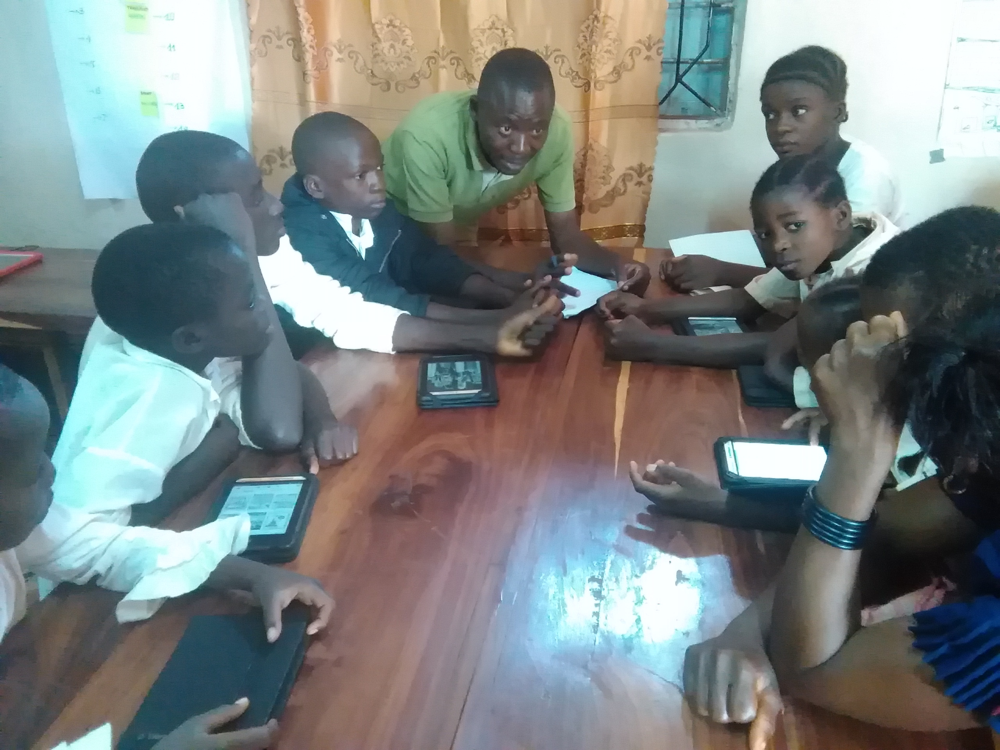
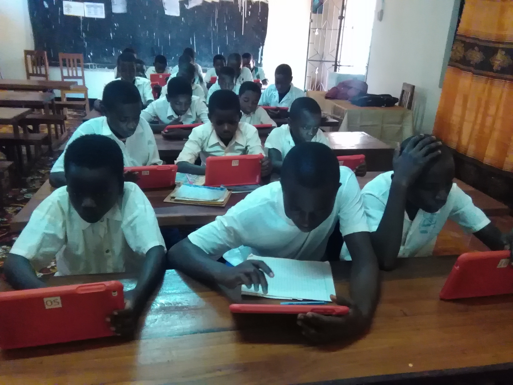

THIS IS MY FIRST WEBSITE
QUOTES OF LIFE
Life is inherently risky. There is only one big risk you should avoid at all costs, and that is the risk of doing nothing.
A business opportunity involves sale or lease of any product, service, equipment, etc. that will enable the purchaser-licensee to begin a business.
The licensor or seller of a business opportunity usually declares that it will secure or assist the buyer in finding a suitable location or provide the product to the purchaser-licensee.
This is different from the sale of an independent business, in which there is no continued relationship required by the seller.
WEB PAGE
I am doing my practice ofweb design in html, so after finishing this, I will make my own pretty website for students of primary school specially standard six. 
It was a day where students celebrated the book readers day, and they made short stories to show how they improve in reading books.
Using the electronic books and other physical books, students enjoy reading those books for improving their language(French and English) 
Students are studying by themselves using tablets connected to the network,
others are using those tablets in hand to communicate with people outside the camp
HTML The same apply to the work they are doing at school, teachers are working hard to ensure that every student understands what is taught and may be they use other books and magazine to make them understand better. Formatting
My favorite color is blue red.
click for video